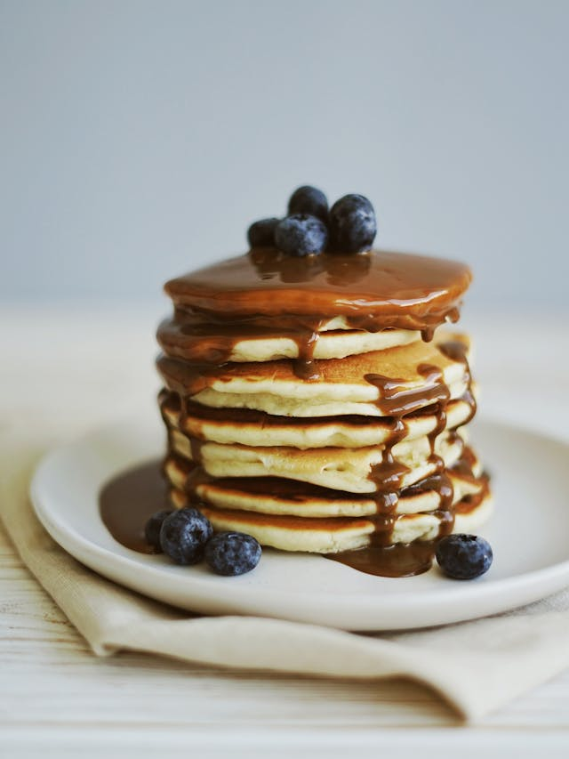

Home
Pancakes Blueberries

Description
For anyone who loves to make a delicious breakfast on the weekend or even brunch, you'll love this pancake recipe! These pancakes are light, fluffy, and especially thick, and the blueberries add a fruity flavor that's typically American! Enjoy them as is or with maple syrup.
Ingredients
- 12.5 g Blueberries
- 1 Egg
- 0.8 cl Milk
- 0.8 cl Whipped cream
- 1 teaspoon Baking powder
- 1 teaspoon Baking soda
- Nutmeg
- Maple syrup
- 12.5 g Flour
- Sugar
- Butter
- Salt
Steps
- In a bowl, mix together the flour, sugar, baking powder, baking soda, salt, and nutmeg.
- Melt the butter. In a large bowl, beat the egg, milk, and cream with an electric mixer. Add the butter, then the flour, and mix until you have a smooth batter.
- Do not defrost the blueberries. Melt a little butter in a hot frying pan, then pour in the batter to make small pancakes.
- Place 1 tablespoon of blueberries on each pancake. When the batter has set and the underside is golden brown, flip the pancakes and brown the other side.
- Keep the finished pancakes warm in the oven. Continue in the same way with the rest of the batter until there is no batter left, adding butter as needed.
- You can serve the pancakes with maple syrup or enjoy them plain. You can also make them without fruit, served only with maple syrup.